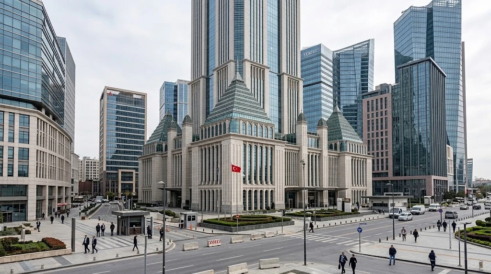

Global Watchdog Urges Turkey to Close Stablecoin Regulatory Gap
A new FSB review credits progress on crypto oversight but warns that rules for stablecoin issuers remain incomplete.

Turkey has strengthened oversight of crypto-asset service providers but still needs a dedicated framework for stablecoin issuers, the Financial Stability Board said in a peer review published Wednesday.
The international watchdog acknowledged that authorities had brought a large part of the domestic crypto market within the regulatory perimeter through registration and licensing requirements. It also identified gaps in stablecoin supervision, financial-stability monitoring and cross-border cooperation.
The report is a set of recommendations, not a new Turkish law. It does not mean that a stablecoin framework has already been introduced, that individual tokens have been banned, or that every crypto transaction in Turkey is illegal. The review evaluates progress against international recommendations and identifies areas where authorities should take further steps.
The distinction matters because different parts of the crypto market are subject to different rules. A service provider may face registration, custody or trading requirements while a separate set of rules for the issuer of a stablecoin remains incomplete. The FSB said that distinction leaves an important gap in how the wider arrangement is supervised.
Stablecoins are digital tokens designed to maintain a stable value, commonly in relation to a currency. Their ability to maintain that value depends on their design and supporting arrangements. A label or a stated target price does not guarantee that a holder will always be able to redeem a token at that price.
The FSB recommended a regime addressing issues such as reserve management, stabilisation arrangements and timely redemption. Those features matter because holders' confidence can weaken if they cannot understand what backs a token or how they can exchange it for the reference currency.
What authorities have already done
The review did not portray Turkey's market as unregulated. It credited authorities with establishing a framework for crypto-asset service providers and moving toward licensing and supervision. It also noted structural safeguards, including separation of custody, and a prohibition on using crypto-assets for domestic payments.
Those measures address some routes through which problems in crypto markets could spread to payments and banking. The FSB also said authorities had put a centralised data platform into operation to monitor crypto activity. Having a platform, however, is not the same as completing a forward-looking framework for monitoring financial-stability risks. The watchdog recommended that authorities build on the data already collected to identify and track relevant risk channels.
The peer review drew on information about reforms through August 2026 and discussions with Turkish authorities. Its focus was financial stability, rather than a comprehensive assessment of consumer protection, market integrity or anti-money-laundering controls. That scope limits what readers can infer from its conclusions about any one firm or customer.
The report describes the market as largely driven by retail participation. It says economic conditions shape use: crypto assets are held predominantly for speculation, while stablecoins can be used as a store of value and a hedge against currency depreciation and inflation. The FSB also noted that activity on offshore platforms remains outside the domestic regulatory perimeter, limiting authorities' visibility.
Why cross-border oversight matters
A token can be issued in one jurisdiction, traded on a platform in another and held by customers elsewhere. That structure complicates the task of monitoring risk. A domestic licensing system may provide information about local providers without capturing the full activity of offshore firms accessible to local users.
The FSB therefore recommended stronger cooperation and information sharing across borders and across sectors. It also suggested developing more consistent market data and using additional sources, including on-chain and cross-border information, to identify activity that is not fully visible in domestic reports.
Those recommendations do not establish that all stablecoins pose identical risks. Their legal arrangements, reserves, redemption terms and distribution differ. The review's concern is that authorities need a framework capable of assessing and supervising the relevant arrangements, particularly where foreign-currency exposure and retail use are significant.
For the broader industry, the report illustrates the gap between creating rules for exchanges and building a complete framework for digital money instruments. A custodian can safeguard assets, but custody rules alone do not determine the quality of an issuer's reserves or the enforceability of redemption rights.
TTN Finance has examined another part of this market in its reporting on Visa's addition of Monad to its stablecoin settlement network. That project concerns back-end settlement options and is not evidence that Turkey has adopted the FSB's recommendations.
The FSB's next question is implementation. Turkish authorities would need to decide how to translate the recommendations into specific measures and how those measures interact with existing supervision. Until then, the review provides a detailed assessment of the current gaps rather than a timetable for a new law.